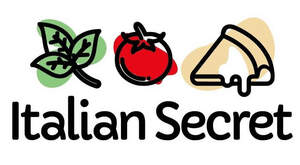

Trade Mark Journal No.2025/032 8 August 2025
UK00004179961 26 March 2025 (29,30,35,39)
Mark 1

Mark 2
- Class 29
- Preserved and processed foods and ingredients for prepared meals, namely mozzarella cheese, burrata, ricotta, gorgonzola cheese, fontina cheese, pecorino, parmesan cheese, provolone, taleggio, asiago, blue cheese, stracchino, goat cheese, smoked scamorza, caciocavallo, grana padano, mascarpone, cheese spreads, herbed cream cheese, flavoured or smoked processed cheese, paneer; cooked or preserved meats, namely salami, sausage, ham, prosciutto cotto, mortadella, pancetta, bacon, chicken, turkey, beef, lamb, pulled pork, meatballs, liver sausage, guanciale, lardo, bresaola, cured beef, nduja, pepperoni, bone marrow, duck, duck confit, foie gras, venison, wild boar, meat pates and spreads, rabbit, pork belly; cooked, preserved or processed fish, namely anchovies, tuna, smoked salmon, mackerel, sardines, fish paste, salt cod, caviar; packaged food toppings consisting of vegetables, including mushrooms, porcini mushrooms, black trumpet mushrooms, chanterelles, portobello mushrooms, courgettes, aubergines, peppers, onions, potatoes, artichokes, cherry tomatoes, friarielli, spinach, pumpkin, caramelised onions, broccoli, fennel, leeks, kale, beets, asparagus, peas, roasted garlic, sweet potatoes, Jerusalem artichokes, parsnips, collard greens, seaweed, celery; packaged food toppings consisting of vegetables, including cabbage, kimchi, pickled onions, pickled gherkins, artisan pickled vegetables, preserved and processed mixed vegetables, sun-dried tomatoes, olives, truffle slices; prepared food kits, namely preserved toppings being octopus, squid, cuttlefish, prawns, shrimp, mussels, clams, scallops, eel, bottarga, surimi, lobster, crab meat, sea urchin roe, processed pineapple, pistachios, walnuts, almonds, hazelnuts, cashews, pine nuts, and sunflower seeds, rocket salad, endive, radicchio, chicory, and salad greens, cooked eggs, quail eggs, hard-boiled egg slices, preserved tofu, tempeh, seitan, jackfruit, lentil-based preserved products, soy-based cheese analogues, eggplant-based egg substitutes all to be added to pizzas.
- Class 30
- Flour-based preparations for food; dough for use in cooking; pizza bases; gluten- free pizza bases; keto-friendly pizza bases; par-baked pizza crusts; to-bake pizza bases; dough balls for pizza; prepared sauces for use with meals, namely tomato sauce, Norma sauce, Genovese sauce, Amatriciana sauce, Bolognese sauce, tomato-based sauces, cheese-based sauces, and creamy sauces; pesto; pistachio-based sauces for culinary use, including as condiments or dessert fillings; ready-to-use sauces and condiments including edible oils and fats used as condiments, including chili oil and truffle oil; bread; focaccia; breadsticks; pastries, including panettone, colomba cakes, croissants and cannoli; desserts, being shelf-stable or MAP-packaged bakery products; cakes; biscuits.
- Class 35
- Online retail and wholesale services connected with the sale of food products and meal kits, namely packaged pizza bases and food ingredients; retail services connected with the sale of shelf-stable and refrigerated food products via an e- commerce platform.
- Class 39
- Subscription-based delivery of meal kits and pizza components.
Italian Secret ltd